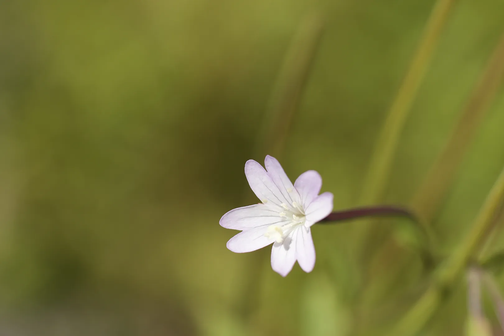
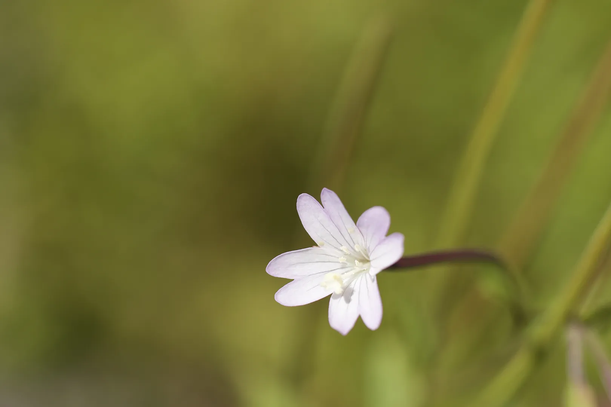

Jeg tror naturen en den mektigste kunstneren og min jobb er å fange underverkene i all deres prakt. Fra fantastiske landskap til de delikate detaljene i et enkelt blad. Jeg spesialiserer meg på fotografering som feirer den utrolige skjønnheten og mangfoldet i naturen.
Enten det er en rolig soloppgang over en tåkete dal, en levende skog i full blomst eller de subtile strukturene til dyrelivet i dets naturlige habitat, tar bildene mine deg inn i naturens mest fantastiske øyeblikk. Med fokus på komposisjon, lys og naturens stadig skiftende stemninger, tar jeg sikte på å lage bilder som inspirerer ærefrykt og verdsettelse for jorden rundt oss
Utforsk porteføljen min for å oppleve naturens skjønnhet gjennom linsen min. La oss bringe freden, kraften og prakten til utendørs inn i rommet ditt.

 
